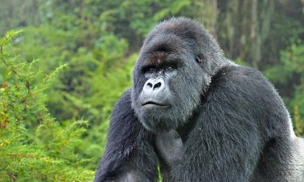
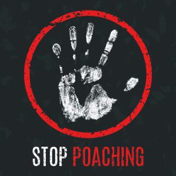
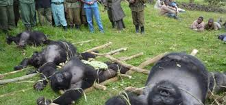

Poaching of Mountain Gorillas in Africa
By: Ananta Kaundinya


Note:
At the end watch this documentary
===============================================================================================================================================================
Part 1
===============================================================================================================================================================
Chapter 1: The problem with mountain gorillas in Africa
Mountain gorillas are one of the animals that are found in Africa. The problem is that they are critically endangered. They are being poached. Poaching is illegal activity, meaning poaching is against the law. It will be banned sometime. That is the government's responsibility. We will soon know. The cause of this is because of people. People are destroying habitats, poaching, etc.

This is a picture to prove that poaching is illegal.
===============================================================================================================================================================
Chapter 2: The consequences of the mountain gorillas because of poaching
The effect of the mountain gorillas being poached is that they are decreasing population. Mountain Gorillas look critically endangered. Not a lot of gorillas were remaining in this world. How sad? There could be a solution.

This is a picture that shows that mountain gorillas are critically endangered.
===============================================================================================================================================================
Chapter 3: Contemporary possible solutions in Africa
Currently, the government is banning poaching and hunting and any other illegal activity in Africa which could kill animals. This affects the future in a way that mountain gorillas are no longer critically endangered. It is still not working to stop poaching of mountain gorillas though. There should be a stronger solution to stop this.

This is a sign from the government to show that poaching is illegal and cannot be trusted.
===============================================================================================================================================================
Chapter 4: Solutions into stopping poaching
There are many ways to stop poaching. One of the ways to stop poaching is staying away from wild animals. Another one of the ways to stop poaching is reporting illegal wildlife trade to the government. Stay away from wild animals. No more poaching endangered animals.
Bibliography
Works Cited
"Poaching." Britannica School, Encyclopædia Britannica, 7 Feb. 2019, school.eb.com/levels/middle/article/poaching/631335. Accessed 1 June 2020.
"Gorilla." Mountain Gorillas, Encyclopædia Britannica, 13 June 2019, school.eb.com/levels/middle/article/gorilla/311468. Accessed 1 June 2020.